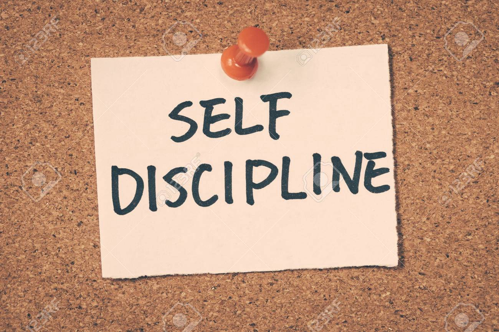
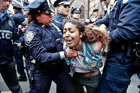

What Is Self Discipline

What self discipline means is to treat yourself with respect. Another is to make sure that you aren't taking the easy way out. The last way is to make sure you always you make sure you worry about yourself before others.
Black People
Black Essence
What is trust
How to get someone trust id by loyalty. Another way is to not tell peoples secrets. The last way to stick up for someone in a fight.
Black hands
Black Wrongs
How do you deal with racism

How I deal with racism is just by saying something racist back. Another way I deal with racism is by just walking away. The last way I deal with it is by just fighting them.
Black Baby face
Black person talks trash
What does it mean to be the best you.
What it means to be the best you is to respect your body. Also don't be late to any of your classes or to be absent. Another way is to stay on top off your school work and your work at home.
Black person with anger
What blacks shouldn't say
Acknowledging Our Ancestor
People should acknowledge there ancestors by remembering how they survived for us. We should acknowledge them by appreciate them by home they built our country. And we should acknowledge them by giving them praises everyday.
No more donald
Black people having fun
My CS Reflections